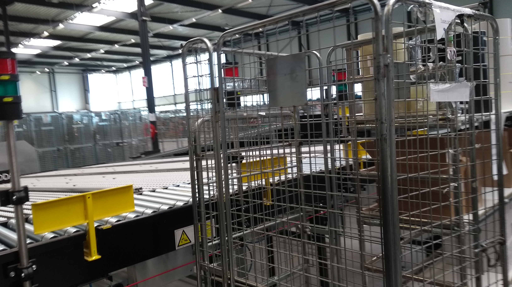

HBO-I Job Event
Bij de bedrijven met welke ik gesproken heb, worden meerdere culturen gebruikt. Zo wordt bij Accenture gewerkt in projectgroepen,
deze project groepen zijn iedere keer anders. Bij dongIT en Secura BV, welke pentesting bedrijven zijn, wordt natuurlijk op een heel andere manier
gedacht. Hierbij wordt voornamelijk gekeken naar hoe een werkend programma/applicatie gebroken kan worden door een mogelijke hacker.
Bij de Sligro wordt veel geoutsourced op dit moment, dat betekent dat er toch meer een management cultuur hangt.
Er zijn vele functies binnen de bedrijven. Bij Quintor zijn de meeste posities full-stack developers, terwijl bij Accenture de posities opgesplitst zijn
in front-end, back-end, management, consulting, etc. Bij de pentesting bedrijven, dongIT en Secura BV, is de belangrijkste positie een pentester, maar ook zijn er een aantal posities die meer
met de mensen omgaan, social engineering posities.
Ook zijn er vele bedrijven die server beheer posities hebben; de lieden die het bedrijf werkelijk in werking houden.
Ten slotte zijn er ook vele manier van werken in de verschillende bedrijven. Zoals eerder genoemd, werkt de Sligro met out-sourcing, zelf doen ze dus niet zo heel veel, maar ze laten andere
bedrijven het werk doen. Een aantal bedrijven werken met de Agile methode, hierbij dan ook Scrum; deze bedrijven zijn bijvoorbeel Quintor of Accenture.
Bedrijvensafari
Bij de bedrijvensafari ben ik langsgeweest bij Syntess, Omoda, Your Surprise, ZLM en Soltegro.
Veel dingen van het Job Event kwamen hier ook weer terug. Zo werkt Syntess met Agile/Scrum. De ZLM werkte met de waterval methode, maar wisselt ook over naar Agile.
De culturen binnen de bedrijven variëren wel behoorlijk. Zo is Your Surprise een bedrijf dat enorm aan het uitbreiden is; wat over aan het gaan is van klein naar groot bedrijf.
